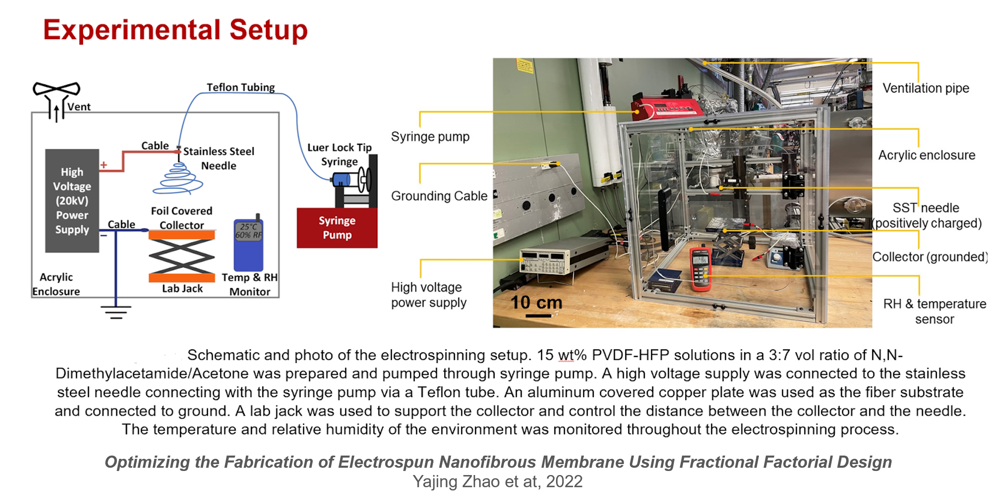
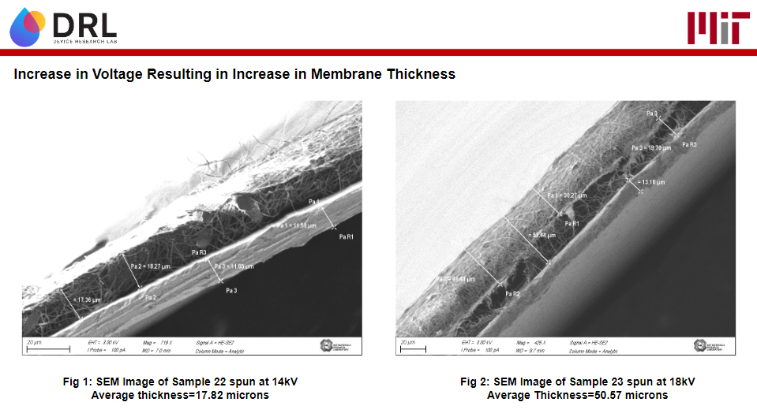
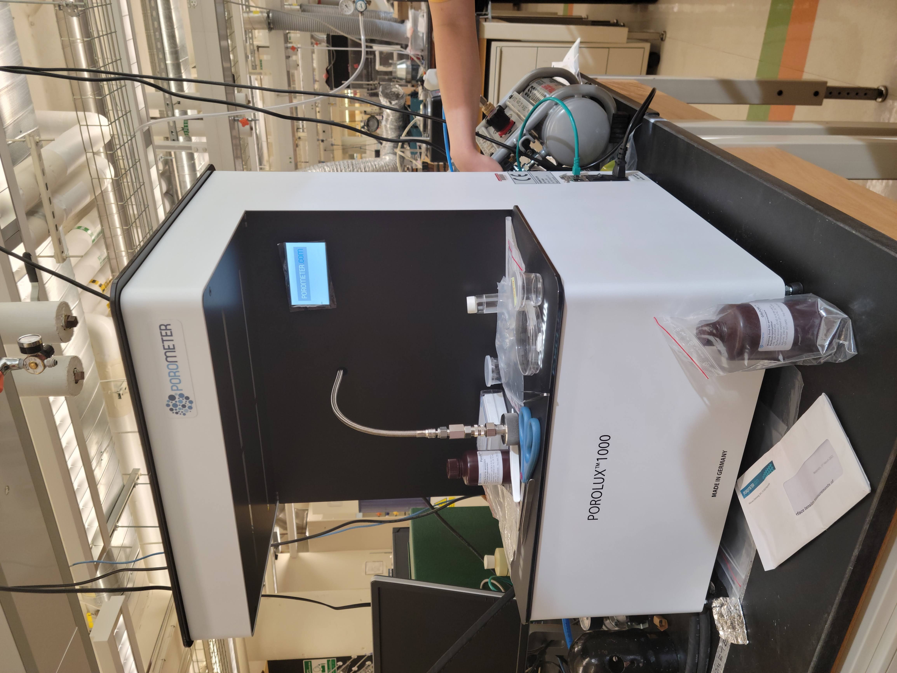
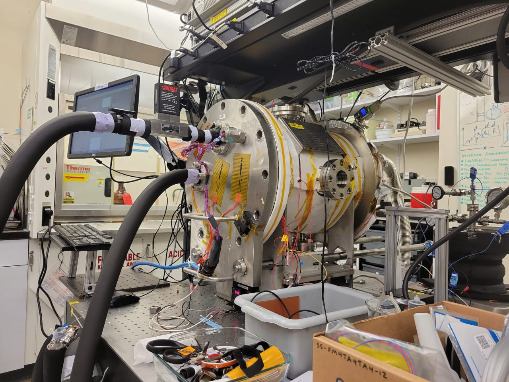

Fabrication and Characterization of Electrospun Membranes with Applications in Energy and Water Capture
Steam condensers are widely used components with applications in power plants, water desalination plants and HVAC systems. Improving the efficiency of the condensation process has the potential for major sustaniability gains through energy and cost savings. Working under the supervision of phD student Yajing Zhao under Prof. Evelyn Wang's Device Research Lab housed at MIT's Rohsenaw-Kendall Heat Transfer Laboratory, I worked to help develop a scalable, low-cost hierarchically structured condenser device expected to enhance heat transfer efficiency by improving the condensation process.
My role centered around the fabrication and characterization of a hydrophobic polymer membrane that played the critical role of generating the driving force for guiding condensate flow, and maintaining a desired thickness of condensate film. This membrane, in combination with a copper wicking layer underneath, worked to leverage the efficiency benefits of film-wise condensation over droplet condensation, while rapidly transporting the condensate from the surface allowing for faster condensation rates.
In addition, the fabrication of the membrane involved use of a novel fabrication technique known as electrospinning, where fibers of a select polymer are deposited onto a substrate driven by an electrostatic field, forming the desired membrane over time.
Key Skills : Independent research, Thin membrane fabrication, operation of high voltage equipment, Scanning Electrom Microscope(SEM) imaging and analysis, vacuum chamber operation, Wet lab skills: handling of hazardous substances, pipetting, use of centrifuge, fume hood, liquid nitrogen, Porolux 1000 porometer operation for permeability testing, development of experimental equipment Standard Operating Procedure(SOP) documents, training incoming research assistants on experimental procedure
Membrane Fabrication
Having joined the project right after the proof of concept phase, I worked alongside my mentor to perform literature reviews to refine and document different fabrication recipes for the membrane. I was tasked with building a protective enclosure for the electrospinning setup(pictured further below), and designing and conducting a series of experiments to narrow down the key parameters affecting the membrane morphology. The fabrication process was as follows:
- A solution containing a hydrophobic polymer dissolved in acetone was prepared to a specific percentage weight concentration
- The solution is fed into a syringe with a metallic needle positioned above a collection plate substrate covered in foil
- A live wire from a high voltage power supply is clipped to the syringe needle, while a ground wire is clipped to the collection plate creating a large potential difference between the two.
- The syringe is loaded into a syringe pump that expels the polymer solution at a predefined rate.
- The potential difference between the needle and the plate led to a phenomenon of electric discharge through the expelled polymetric solution, which emerged as thin fibers that deposit onto the plate, with the polymer solvent vaporizing in the process. This process is referred to as electrospinning

The result is a thin membrane whose properties(thickness, fiber diameter, porosity and permeability) can be tuned through a variety of parameters such as distance between the depositing syringe needle and the sample substrate, substrate type and bonding performance, voltage potential used, spinning time, polymer solution concentration, and solution feed rate input in syringe pump.
Membrane Characterization
SEM Imaging
A Scanning Electron Microscope was used to characterize the impact of the varied experimental parameters on the morphology of the electrospun membrane; focusing mainly on the resultant fiber diameter, membrane pore size, and the overall thickness of membrane.
A sample iteration, comparing the effect of varied voltage on membrane thickness is captured below.

Porometry
The sample membranes were further characterized for porosity and permeability using a POROLUX1000 gas and liquid porometer. I received training on how to operate the porometer, from learning how to prepare and load the samples, collect and tabulate data, monitor and troubleshoot the device, as well as replace and log used materials such as spent nitrogen gas tanks
condensation experiments
The samples would then be integrated into the rest of the device and tested for performance in condensation experiments ran inside a vacuum chamber(pictured below). I assisted my mentor in the experimental setup and monitoring process, which called for:
- a multi-step cleaning process for the control condensation surface. That is, a copper column that needed to be washed, sonicated in cleaning solvents, rinsed, dried with a stream of nitrogen, and placed in a plasma cleaner to remove any traces of an oxide layer
- preparing the vacuum pump system by handling and topping up with liquid nitrogen, following cryo-safety standards
- monitoring vacuum chamber functionality through pressure gauge readings and regular leak testing using nitrogen gas
- performing vacuum chamber maintenace by cleaning/replacing o-rings and gaskets, and monitoring pump oil levels

analysis, conclusions and future work
For each round of experiments, I put together a table of parameters, in which I would record the conditions of the fabrication run, and report the observations from SEM imaging and performing porosity and permeability tests on the membrane. The samples' performance was compared against the theoretical model, as well as commercially available membranes.
The experiments proved successful in tuning a viable polymer recipe and set of electrospinning conditions, and my project mentor went on to publish and present the work at a number of poster sessions.
Ultimately, she moved onto the product development stage after participating in startup accelarator competitions and mentorship programs